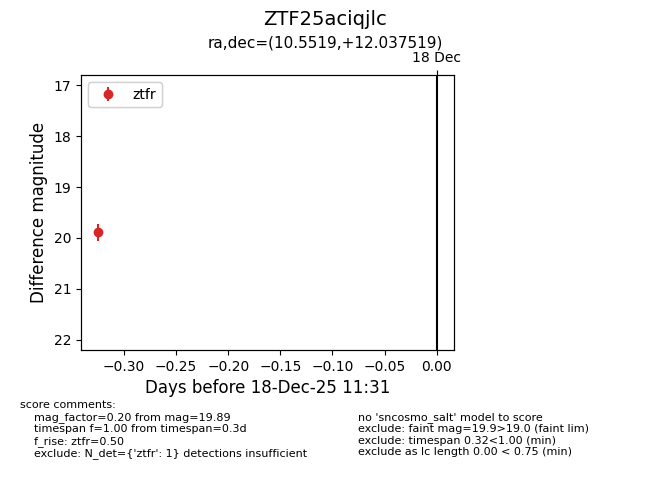
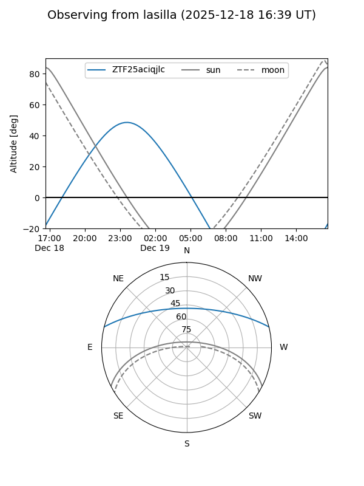
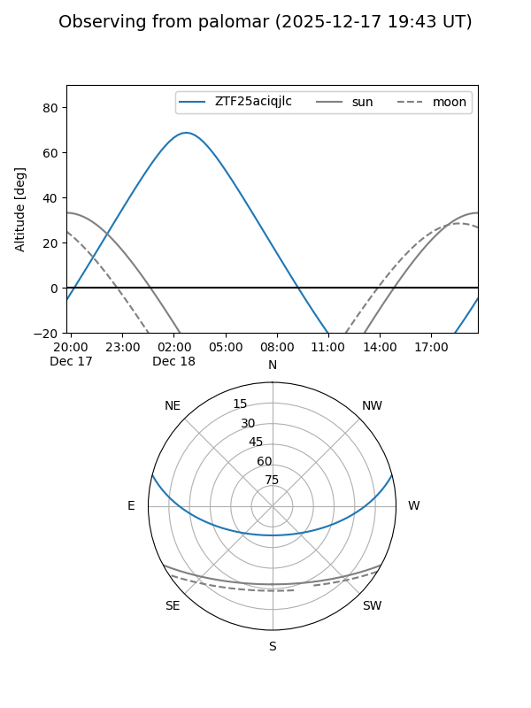

ZTF25aciqjlc
Target ZTF25aciqjlc at 2025-12-18 11:32
Aliases and brokers:
FINK: fink-portal.org/ZTF25aciqjlc
Lasair: lasair-ztf.lsst.ac.uk/objects/ZTF25aciqjlc
ALeRCE: alerce.online/object/ZTF25aciqjlc
alt names
ZTF25aciqjlc (ztf,fink_ztf)
Coordinates:
equatorial (ra, dec) = 10.5519,+12.03752
equatorial (HMS+DMS) = 00:42:12.46,+12:02:15.07
galactic (l, b) = (119.3621,-50.77024)
Photometry
last ztfr=19.89
1 ztfr detections
Lightcurve

Visibility


Additional plots